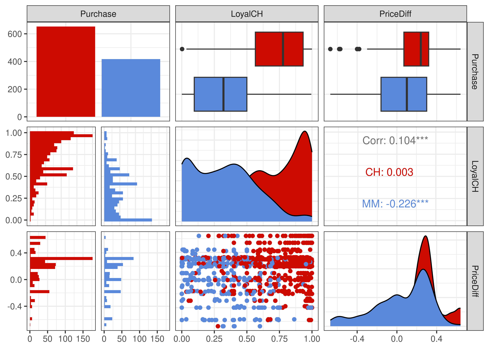
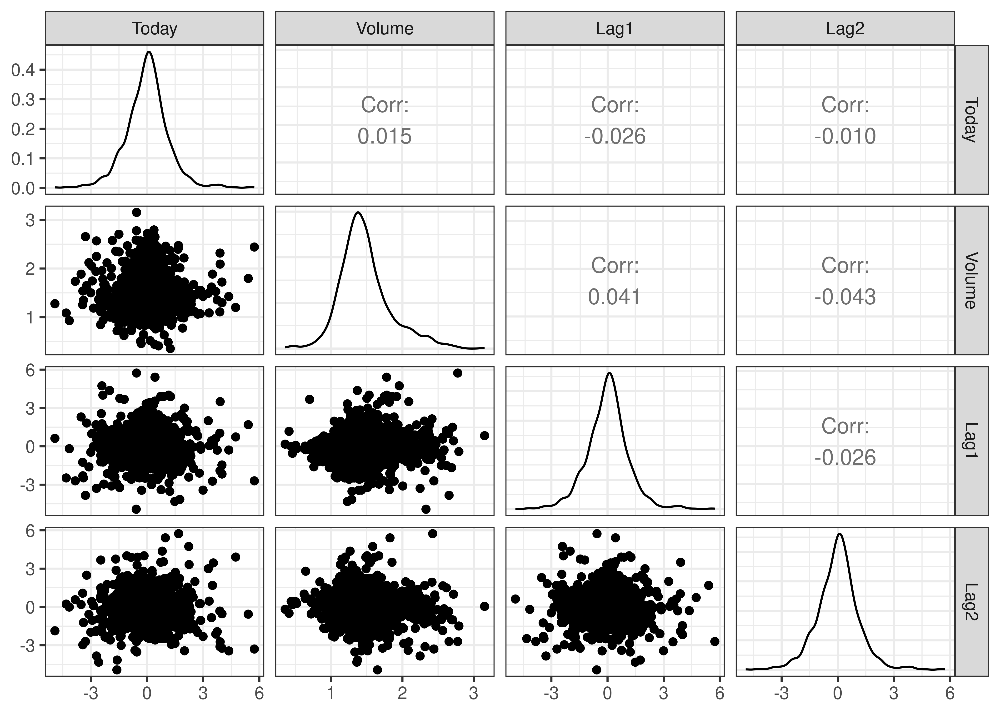

library('ISLR2') # for the data
library('tidyverse') # to use things like the pipe (%>%)
library('e1071') # for SVM model
library('tidymodels') # for model tuning, cross-validation etc.
# Vanity packages:
library('GGally') # for pretty correlation plot
library('ggsci') # for pretty plot colours
library('cvms') # for pretty confusion matrix plots✨ Bonus Lab (Optional) - Cross-validation
DS202 - Data Science for Social Scientists
Context
Originally, we intended it to be part of W08 lab but decided against it as it would make the lab too cluttered.
Although optional, we think the exercises in here might be a great way to solidify your knowledge of SVM and its parameters.
Topics
Here we show an alternative way to perform k-fold cross-validation using tidymodels instead of the cv.glm we saw in W05 lab.
Setup
💡 Some of you have mentioned that your R version cannot handle tidymodels. We recommend you update R to version 4.2.0 or above.
Packages you will need
The Data
🍊Orange Juice
This week we will use a different ISLR2 dataset: OJ . We will perform a classification task with the goal to predict the Purchase column.
The data contains 1070 purchases where the customer either purchased Citrus Hill or Minute Maid Orange Juice. A number of characteristics of the customer and product are recorded.
ISLR2::OJ %>% head() Purchase WeekofPurchase StoreID PriceCH PriceMM DiscCH DiscMM SpecialCH
1 CH 237 1 1.75 1.99 0.00 0.0 0
2 CH 239 1 1.75 1.99 0.00 0.3 0
3 CH 245 1 1.86 2.09 0.17 0.0 0
4 MM 227 1 1.69 1.69 0.00 0.0 0
5 CH 228 7 1.69 1.69 0.00 0.0 0
6 CH 230 7 1.69 1.99 0.00 0.0 0
SpecialMM LoyalCH SalePriceMM SalePriceCH PriceDiff Store7 PctDiscMM
1 0 0.500000 1.99 1.75 0.24 No 0.000000
2 1 0.600000 1.69 1.75 -0.06 No 0.150754
3 0 0.680000 2.09 1.69 0.40 No 0.000000
4 0 0.400000 1.69 1.69 0.00 No 0.000000
5 0 0.956535 1.69 1.69 0.00 Yes 0.000000
6 1 0.965228 1.99 1.69 0.30 Yes 0.000000
PctDiscCH ListPriceDiff STORE
1 0.000000 0.24 1
2 0.000000 0.24 1
3 0.091398 0.23 1
4 0.000000 0.00 1
5 0.000000 0.00 0
6 0.000000 0.30 0To understand what each variable represent, open the R Console, type the following and hit ENTER:
?ISLR2::OJWhich variables can help us distinguish the two different brands?
To simplify our plots later on, let’s focus on just two predictors:
plot_df <- ISLR2::OJ %>% select(Purchase, LoyalCH, PriceDiff)
g = (
ggpairs(plot_df, aes(colour=Purchase))
# Customizing the plot
+ scale_colour_startrek()
+ scale_fill_startrek()
+ theme_bw()
)
g 
📈 Stock Market
We will also use the Smarket dataset from the ISLR2 package. We will perform a regression task with the goal to predict the percentage of return of the S&P 500 stock index on any given day, as represented by the Today column.
Daily percentage returns for the S&P 500 stock index between 2001 and 2005.
ISLR2::Smarket %>% head() Year Lag1 Lag2 Lag3 Lag4 Lag5 Volume Today Direction
1 2001 0.381 -0.192 -2.624 -1.055 5.010 1.1913 0.959 Up
2 2001 0.959 0.381 -0.192 -2.624 -1.055 1.2965 1.032 Up
3 2001 1.032 0.959 0.381 -0.192 -2.624 1.4112 -0.623 Down
4 2001 -0.623 1.032 0.959 0.381 -0.192 1.2760 0.614 Up
5 2001 0.614 -0.623 1.032 0.959 0.381 1.2057 0.213 Up
6 2001 0.213 0.614 -0.623 1.032 0.959 1.3491 1.392 Upplot_df <- ISLR2::Smarket %>% select(Today, Volume, Lag1, Lag2)
g = (
ggpairs(plot_df)
# Customizing the plot
+ scale_colour_startrek()
+ scale_fill_startrek()
+ theme_bw()
)
g 
To understand what each variable represent, open the R Console, type the following and hit ENTER:
?ISLR2::SmarketStep 4: k-fold cross validation with tidymodels
Here we will replicate the cross-validation setup used to generate the structure 🗓️ Week 04 lecture/workshop.
⏮️Recap:
We also explored training vs test splits, albeit in a different way, in Step 2.1 of 💻 Week 04 - Lab
k-fold cross-validation was also present in Step 2 of 💻 Week 05 - Lab
Cross-validation was also mentioned in the 🗓️ Week 05 lecture, when you were introduced the problem of overfitting.
But how exactly can cross-validation help overcome overfitting? This is what we will explore in this section of the lab.
Step 4.1: Create training / test split
We start by creating a training / test split using the functions initial_split packages for 📈 SMarket data.
set.seed(123)
# Remove Direction, otherwise we would be "cheating"
filtered_data <- ISLR2::Smarket %>% select(Today, Volume, Lag1)
default_split <- initial_split(filtered_data, prop = 0.75, strata = Today)
internal_validation_set <- training(default_split)
external_validation_set <- testing(default_split)How many samples are in the internal validation set?
nrow(internal_validation_set)[1] 936How many samples were left in the external validation set?
nrow(external_validation_set)[1] 314The external validation set will only be used at the end
Step 4.2: Create resampling folds for cross validation
Next, let’s create 10-fold cross-validation data using internal_validation_set. We can achieve this by using the vfold_cv command, specifying v = 10.
k_folds <- vfold_cv(internal_validation_set, v = 10)
k_folds# 10-fold cross-validation
# A tibble: 10 × 2
splits id
<list> <chr>
1 <split [842/94]> Fold01
2 <split [842/94]> Fold02
3 <split [842/94]> Fold03
4 <split [842/94]> Fold04
5 <split [842/94]> Fold05
6 <split [842/94]> Fold06
7 <split [843/93]> Fold07
8 <split [843/93]> Fold08
9 <split [843/93]> Fold09
10 <split [843/93]> Fold10Notice anything odd? The output is a tibble but the first column splits is a series of lists. This is another thing that makes tibbles different to data frames - you can nest lists within tibbles but not data frames. We will use this more explicitly in the next lab when we build k-means clustering models.
Step 4.3: 🍳Specifying a recipe
The next step is to create a recipe. Luckily, recipe function takes the same values as the lm model! We first create a formula default ~ . and then use data = internal_validation_set. Printing smarket_recipe, we have one outcome and three predictors.
smarket_recipe <- recipe(Today ~ ., data = internal_validation_set)
smarket_recipeRecipe
Inputs:
role #variables
outcome 1
predictor 2Step 4.4: Specify a model
Next, we will specify a support vector machine model. Here’s where things get a bit more involved.
We specify a radial basis function SVM. svm_rbf takes two hyperparameters: cost and rbf_sigma. Instead of specifying a single value for each, we will instead set them equal to tune(). This indicates that we want to try a range of different values.
svm_regressor <-
svm_rbf(cost = tune(), rbf_sigma = tune()) %>%
set_mode('regression') Step 4.5: Create a hyperparameter grid
Which values for cost and rbf_sigma should we choose? It is often hard to tell, so instead we can experiment with different values.
We can use grid_regular to create a tibble of different hyperparameter combinations. levels = 5 indicates that we want to try out five different values for each hyperparameter.
set.seed(234)
svm_grid <- grid_regular(cost(), rbf_sigma(), levels = 5)
svm_grid# A tibble: 25 × 2
cost rbf_sigma
<dbl> <dbl>
1 0.000977 0.0000000001
2 0.0131 0.0000000001
3 0.177 0.0000000001
4 2.38 0.0000000001
5 32 0.0000000001
6 0.000977 0.0000000316
7 0.0131 0.0000000316
8 0.177 0.0000000316
9 2.38 0.0000000316
10 32 0.0000000316
# … with 15 more rowsStep 4.6: Perform cross-validation
We now have all we need to run cross-validation, and the function tune_grid puts everything together. Let’s think intuitively what this command is doing.
We are telling
tune_gridthat we want to run a classification model on a recipe using different resampling folds.Instead of specifying hyperparameter values we want to run a combination of different values.
After this, we want to choose a metric to evaluate different combinations.
We opt for
rmsebut we can specify several metrics however using themetric_setcommand.
smarket_tuned <-
tune_grid(object = svm_regressor,
preprocessor = smarket_recipe,
resamples = k_folds,
grid = svm_grid,
metrics = metric_set(rmse),
control = control_grid(save_pred=TRUE))Step 4.7: Which combination of hyperparameters works best?
Now we have tuned our models, let’s find out which combination of hyperparameters work best. We can create a ggplot easily using the autoplot command.
smarket_tuned %>%
autoplot() +
theme_minimal() +
ggsci::scale_color_jco() +
labs(y = 'RMSE', colour = 'Sigma')🎯 ACTION POINT: Can you explain what we see in the plot above?
your text go here
We can use the function select_best to identify the hyperparameter combination that leads to the highest precision.
select_best(smarket_tuned)🏠 Take-home exercises (Advanced)
Don’t worry, the next summative problem set will not require you to write code like asked in here.
Q5: Re-run Step3 (Regression)
Build a standalone SVM model (tidymodels version) on the same data we used in Step 3 of W08 lab, only this time set the parameters of the SVM to the optimal parameters identified in Step 4.
# your code goes hereQ6: Predict the external validation set
Use the model you built in Q5 and make predictions on the external validation set. How does the RMSE of these predictions compare to the RMSE of the internal validation set?
# your code goes hereQ7: SVM Decision Space (Regression)
Replicate the plot from Step 3.3 of W08 lab roadmap, only this time using the model from Q5.
# your code goes hereQ8: Compare SVM Decision Space plots
Explain if and how the decision space you obtained in Q8 differs from the one in Step 3.3.
your text goes here
Q9: Grid search for Orange Juice (Classification)
For this task, you will use the Orange Juice data set (
ISLR2::OJ) with ALL the predictors includedReplicate the entire procedure of Step 4, making the necessary adjustments to predict
PurchaseUse F1 score as the optimisation metric.
💡You will have two tweak at least two main things: metric_set and set_mode
# your code goes hereQ10: Challenge
Replicate the same steps as in Q9 for different SVM kernels (linear, polynomial, etc.). Is it possible to fit a model that is better than the radial kernel,in terms of F1-score?
# your code goes here